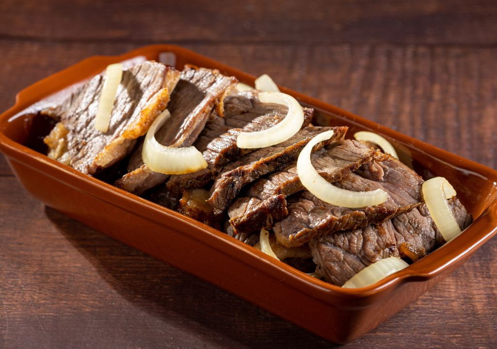

Picanha

Ingredientes
- 1 peça de picanha (de boa qualidade, com uma capa de gordura uniforme; o ideal é que a peça inteira tenha entre 1 kg e 1,1 kg)
- Sal de parrilla ou sal grosso triturado (a gosto)
- Azeite ou manteiga (apenas se for preparar na frigideira)
Modo de preparo
- Corte a carne: Coloque a peça de picanha em uma tábua com a gordura virada para cima. Corte-a em bifes grossos, com cerca de dois a três dedos de espessura (aproximadamente 3 a 4 cm).
- Tempere no momento certo: Salpique o sal de parrilla ou o sal grosso triturado por todos os lados dos bifes. Faça isso apenas de 3 a 5 minutos antes de levar a carne ao fogo para evitar que ela desidrate e perca a suculência.
- Aqueça a superfície:
- Na frigideira: Escolha uma frigideira de fundo grosso (de preferência ferro fundido), coloque um fio de azeite ou um pouco de manteiga e deixe ficar muito quente até começar a fumegar levemente.
- Na churrasqueira: Certifique-se de que o braseiro está bem forte, vermelho e sem chamas altas que possam queimar a carne por fora antes de assar por dentro.
- Sele a gordura: Usando um pegador, coloque os bifes de pé, com a capa de gordura virada para baixo, por cerca de 2 a 3 minutos. Isso vai dourar a gordura, deixá-la crocante e derreter parte dela para dar sabor à carne.
- Grelhe a carne: Deite os bifes e deixe grelhar por cerca de 3 a 4 minutos de cada lado para um ponto "mal passado" para "ao ponto". Não fique virando a carne toda hora; vire apenas uma vez quando o sangue começar a brotar na parte superior.
- O passo mais importante (Descanso): Retire os bifes do fogo e coloque-os em uma tábua. Aguarde 3 minutos antes de cortar. Esse tempo de descanso permite que os sucos da carne se redistribuam internamente, garantindo que ela não resseque ao ser fatiada.
Carne de Sol

Ingredientes
- 500g de carne de sol (cortes como coxão mole, contrafilé ou alcatra são excelentes)
- 1 cebola grande (cortada em rodelas ou meias-luas)
- 2 colheres de sopa de manteiga de garrafa (se não tiver, use manteiga comum misturada com um fio de óleo para não queimar)
- Leite ou água (o suficiente para cobrir a carne na hora de dessalgar)
Modo de preparo
- A dessalga: A carne de sol comprada pronta costuma vir com excesso de sal. Lave a peça em água corrente. Em seguida, corte-a em bifes, tiras ou cubos (como preferir).
- O descanso (Truque de mestre): Coloque a carne cortada em uma tigela e cubra totalmente com leite (ou água). Deixe descansar na geladeira por cerca de 2 a 3 horas. O leite não apenas retira o excesso de sal, mas também quebra as fibras, deixando a carne incrivelmente macia.
- Doure a carne: Adicione os pedaços de carne. Não fique mexendo. Deixe dourar bem de um lado por alguns minutos até formar uma crosta e só então vire para dourar o outro lado. Isso evita que a carne solte água e acabe cozinhando em vez de fritar.
- Adicione a cebola: Assim que a carne estiver bem dourada e no ponto que você gosta, jogue as rodelas de cebola por cima. Mexa bem para que a cebola murche levemente, solte seus açúcares naturais e absorva o sabor da carne e da manteiga que ficou no fundo da panela.
- Sirva: Retire do fogo e sirva imediatamente.